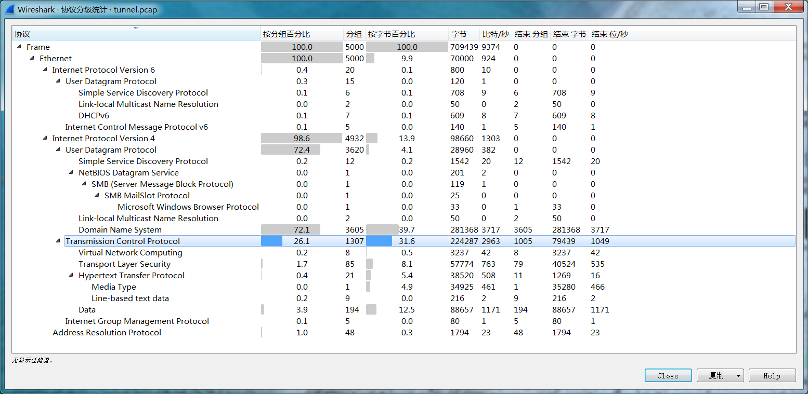

157 tunnel
下载得到pcap格式文件，wireshark打开，统计-协议分级：

按分组百分比来看，DNS协议异常地多。尝试过滤一下DNS协议的数据包：

可以看到，192.168.1.103向DNS服务器8.8.8.8请求了很多个XXX.evil.im的URL请求，其中的子域名每次都是一段不同的类似base64编码的内容。手动解码前几个看一下：
UEsDBDMAAwBjAJ12k1KDFWibyjR
50 4b 03 04 33 00 03 00 63 00 9d 76 93 52 83 15 68 9b ca 34
AAAYNgAACAALAGZsYWcuas
00 00 18 36 00 00 08 00 0b 00 66 6c 61 67 2e 6a
f l a g . j
很明显是个zip格式压缩包。但另一方面比较吊诡的事情在于，如果把解码出来的东西编码回去：
50 4b 03 04 33 00 03 00 63 00 9d 76 93 52 83 15 68 9b ca 34
UEsDBDMAAwBjAJ12k1KDFWibyjQ=
可能会得到一个末尾字符略有不同的base64编码字符串，说明其中大概还存在base64隐写。
那么总之先把所有的base64编码提取出来：
root@kali:~/Desktop# tshark -r tunnel.pcap -Y "dns and dns.qry.type == 1 and ip.src == 192.168.1.103" -T fields -e dns.qry.name | grep "evil.im" | sed "s/\.evil\.im$//" > 1.txt
然后在Python中处理解码和base64隐写：
from base64 import b64decode
from string import *
import re
b64table = ascii_uppercase + ascii_lowercase + digits + '/+'
f = open('C:/Users/Administrator/Desktop/1.txt', 'r').read().split('\n')[:-1]
z = open('C:/Users/Administrator/Desktop/1.zip', 'ab')
m = ''
for i in f:
if len(i) % 4 == 0:
z.write(b64decode(i.encode()))
elif len(i) % 4 == 2:
z.write(b64decode((i + '==').encode()))
m += bin(b64table.index(i[-1]))[2:].zfill(6)[-4:]
elif len(i) % 4 == 3:
z.write(b64decode((i + '=').encode()))
m += bin(b64table.index(i[-1]))[2:].zfill(6)[-2:]
print(''.join([chr(int(i, 2)) for i in re.findall(r'.{8}', m)]))
运行得到一个包含加密的flag.jpg的压缩包和一段输出：
password: B@%MG"6FjbS8^c#r
然后解压得到图像：
flag：flag{D01n't_5pY_0nmE}
（可能是）8月3日更新的一批题目。
158 流量分析2
下载得到pcapng格式文件，wireshark打开，追踪TCP流，依次查看，在流2找到可疑内容：

继续查看，流2到流12均为HTTP流，且Line-based text均包含1-2个字符（流13实际上也是，但它包含的字符是单个换行符\n）。将其提取：
root@kali:~/Desktop# tshark -r test.pcapng -Y "http and ip.dst == 192.168.43.109" -T fields -e http.file_data | xargs | sed 's/ //g'
fl{17uaji1l}n
补完格式得到flag。
flag：flag{17uaji1l}
159 流量分析1
下载得到pcapng格式文件，wireshark打开，能看到大量HTTP协议数据包，先导出HTTP对象：

任选一条出来：
http://39.105.136.196:30025/index.php?url=gopher://127.0.0.1:80/_POST%20%2Fadmin.php%20HTTP%2F1.1%250d%250aHost%3A%20localhost%3A80%250d%250aConnection%3A%20close%250d%250aContent-Type%3A%20application%2Fx-www-form-urlencoded%250d%250aContent-Length%3A%2078%250d%250a%250d%250aid%253D1%2529%2520and%2520if%2528%2528ascii%2528substr%2528%2528select%2520flag%2520from%2520flag%2529%252C1%252C1%2529%2529%253D%252740%2527%2529%252Csleep%25283%2529%252C0%2529%2520--%2520
URL解码两次：
http://39.105.136.196:30025/index.php?url=gopher://127.0.0.1:80/_POST /admin.php HTTP/1.1
Host: localhost:80
Connection: close
Content-Type: application/x-www-form-urlencoded
Content-Length: 78
id=1) and if((ascii(substr((select flag from flag),1,1))='40'),sleep(3),0) --
很明显是在进行时间盲注。
先用tshark提取出所有进行注入的payload：
tshark -r challenge.pcapng -Y "http and ip.dst == 192.168.43.109" -T fields -e http.response_for.uri > 1.txt
然后写个脚本处理每一行，虽然是时间盲注，但实际上不需要判断请求之间间隔的时间。因为从payload来看采用的是简单穷举法，那么对于每一位，只需要提取其穷举过程中该位尝试的最后一个值即可：
from urllib.parse import unquote
data = open('C:/Users/Administrator/Desktop/1.txt', 'r').read().split('\n')
data = [unquote(unquote(i)) for i in data if 'gopher' in i]
flag, index = '', 1
for i in data:
n = int(i.split('flag),')[1].split(',')[0])
if n != index:
flag += chr(c)
index = n
c = int(i.split('\'')[1])
flag += chr(c)
print(flag)
flag：flag{1qwy2781}
160 抓住个黑客
题目：我们的入侵检测系统抓到了一个潜入公司内网的黑客，这家伙貌似是个新手，只会用MSF的默认参数。在我们的逼问之下，这家伙说他只黑了一台公司老旧的Win7主机，这家伙也说出了他搞事情时候的私钥。机智的你，能不能帮我们看看他到底干了什么？
下载得到meterpreter.pcapng和key.pem，查看一下发现后者是私钥。根据提示MSF和文件名meterpreter，猜测是meterpreter流量。找到一篇Meterpreter通讯分析，得到meterpreter数据包的结构：
1、首先是4字节的异或密钥，对后续所有数据进行了按位异或加密；
2、然后是16字节的 session GUID，4字节的enc_flags，4字节的payload_length。4字节的packet_type；
3、以上32字节共同组成Packet Header，剩下的部分全部为Payload；
4、若enc_flags为1，则后续为16字节的iv（用于CBC模式AES加密），再跟payload数据，否则直接接payload数据；
5、payload数据由TLV单元组成，每个单元包括4字节长度位、4字节类型位和数据部分。
一次meterpreter通信过程如下：
1、LHOST 生成 RSA 密钥对发给 RHOST；
2、RHOST 生成 AES 密钥，RSA 加密后发回给LHOST；
3、开始通信。
由于RSA私钥已经给出，可以确定分析思路为：先找到RSA密钥，然后根据meterpreter数据包结构依次解密和分析数据包内容。追踪TCP流，可以判断流24为攻击流量：

其中蓝色为攻击者发送流量，红色为服务器返回流量。那么服务器返回AES密钥所在 数据段为：
2926993adf8c06b90319d8059f51ec99b401f9b42926993a292698b52926993b2926991c2927993b4a49eb5f7648fc5d4652f05b5d43c64e4550c65f4745eb435952f0554726993a290f993b2924ac0e181fac0f1110a90d1f10ab031e13ac081b16aa0f1a16a0031813af0a1f15993a2926953a2b24be3a2926983a2927913a2d24b039ec75e27c93f3e0167fb28dd2c98ea0fd2ff42887d961f4e205a619311cf4b8dd93f189d24b8eb45af277bc76cc0ea8d5a0b3332812e6c8f73cced9f1d32189311dc13c30b80ebf944228979fd974a6ce23aacf386ebb5dbc1ac414a49678e6425944edf4a56f263a9c9e2a80e4d1884b35fc8da6e68bff64d33265350bf3e2b72dc5b0f0580cc12925074fc5505c9cd250b279150b9701cf5b2666ae9d0a0722f8b72aed8ffaa51f43594ebebe13b5bcb75e8a33c8cd396445c0c9da3d5a5b862bde38f62d13afd5387a62abce70e3d4192e3e96996ceaa0d1b0c7796028bdeabfbd8eddd13576f23135e1e7b06a0057a4b07bc786394ba1cd691547fad5db3a2926953a2b269d3a2926993a2926813a2d27542832d93a2fb12d08349729256baeb187
后续各行分别为攻击者和服务器的往返流量。
写个脚本来解密各段流量，首先是解密函数：
from Crypto.PublicKey import RSA
from Crypto.Cipher import PKCS1_v1_5, AES
from itertools import cycle
def decrypt(data: str, key: bytes=None):
d = bytes.fromhex(data)
xor_key = d[:4]
d = bytes([i ^ j for i, j in zip(cycle(xor_key), d[4:])])
res = {}
res['xor_key'] = xor_key
res['guid'] = d[: 16]
res['enc_flags'] = int.from_bytes(d[16: 20], 'big')
res['pkt_length'] = int.from_bytes(d[20: 24], 'big')
res['pkt_type'] = int.from_bytes(d[24: 28], 'big')
res['tlvs'] = []
if res['enc_flags'] == 0:
d = d[28: 28 + res['pkt_length']]
while len(d) > 0:
tlv_len = int.from_bytes(d[: 4], 'big')
tlv_type = int.from_bytes(d[4: 8], 'big')
tlv_content = d[8: tlv_len]
d = d[tlv_len: ]
res['tlvs'].append([tlv_len, tlv_type, tlv_content])
elif res['enc_flags'] == 1 and key:
res['iv'] = d[: 16]
aes = AES.new(key, mode=AES.MODE_CBC, iv=iv)
d = aes.decrypt(d[48: ])
while len(d) > 0:
tlv_len = int.from_bytes(d[: 4], 'big')
tlv_type = int.from_bytes(d[4: 8], 'big')
tlv_content = d[8: tlv_len]
d = d[tlv_len:]
res['tlvs'].append([tlv_len, tlv_type, tlv_content])
return res
然后把流24中从 2926993a 开始的各行以原始数据形式保存为文本文件，读取第一行解密AES密钥：
datas = open('C:/Users/Administrator/Desktop/datas.txt', 'r').read().split('\n')
aes_data = decrypt(datas[0])
aes_key = aes_data['tlvs'][3][2]
rsa_key = RSA.importKey(open('C:/Users/Administrator/Desktop/key.pem', 'rb').read())
rsa = PKCS1_v1_5.new(rsa_key)
aes_key = rsa.decrypt(aes_key, sentinel=None)
最后依次解密后续数据段：
for i in range(1, len(datas)):
try:
print(decrypt(datas[i], aes_key)['tlvs'])
except:
pass
在结果中搜索flag即可。
flag：flag{Meterpreter_Has_A_Greater_Enc_Method_Than_Shell}
161 running
下载附件得到run.exe，看一下属性：

解压得到New Microsoft Word Document.docx和run.exe两个文件，前者没有有效内容。后者继续运行一次得到tif文件，明显是个tiff格式图像。加上后缀后用Photoshop打开，可以看到两个图层：

将矩形1改为不显示，在图层0看到了一段文字：

另一方面，IDA打开run.exe（解压出来的那一个），F5切换伪代码，可以找到在生成tif文件的代码后还给出了一段字符串：

结合以上两条线索，写脚本得到flag：
from itertools import cycle
s = b'njCp1HJBPLVTxcMhUHDPwE7mPW'
print(bytes([i + j for i, j in zip(s, cycle([-1, 1]))]).decode())
flag：flag{mkBq0IICOMUUwdLiTICQvF6nOX}
162 pcap1
下载得到pcap格式文件，wireshark打开，追踪TCP流，在流4发现一段Python代码：

内容为：
import string
import random
from base64 import b64encode, b64decode
FLAG = 'flag{xxxxxxxxxxxxxxxxxxxxxxxxxxxxxxxx}'
enc_ciphers = ['rot13', 'b64e', 'caesar']
# dec_ciphers = ['rot13', 'b64d', 'caesard']
def rot13(s):
_rot13 = string.maketrans(
"ABCDEFGHIJKLMabcdefghijklmNOPQRSTUVWXYZnopqrstuvwxyz",
"NOPQRSTUVWXYZnopqrstuvwxyzABCDEFGHIJKLMabcdefghijklm")
return string.translate(s, _rot13)
def b64e(s):
return b64encode(s)
def caesar(plaintext, shift=3):
alphabet = string.ascii_lowercase
shifted_alphabet = alphabet[shift:] + alphabet[:shift]
table = string.maketrans(alphabet, shifted_alphabet)
return plaintext.translate(table)
def encode(pt, cnt=50):
tmp = '2{}'.format(b64encode(pt))
for cnt in xrange(cnt):
c = random.choice(enc_ciphers)
i = enc_ciphers.index(c) + 1
_tmp = globals()[c](tmp)
tmp = '{}{}'.format(i, _tmp)
return tmp
if __name__ == '__main__':
print encode(FLAG, cnt=?)
同时给出了密文。分析一下加密流程，使用了三种加密/编码，分别为ROT13、（移位为3的）凯撒密码，以及base64。每次循环随机一种，并把加密/编码方式的序号附在密文之前。
写出解密脚本：
from string import *
from base64 import *
def rot13(s):
_rot13 = str.maketrans(
"ABCDEFGHIJKLMabcdefghijklmNOPQRSTUVWXYZnopqrstuvwxyz",
"NOPQRSTUVWXYZnopqrstuvwxyzABCDEFGHIJKLMabcdefghijklm")
return s.translate(_rot13)
def b64d(s):
return b64decode(s.encode()).decode()
def caesar(s):
shifted_alphabet = ascii_lowercase[3: ] + ascii_lowercase[: 3]
table = str.maketrans(shifted_alphabet, ascii_lowercase)
return s.translate(table)
def decrypt(s):
n, s = int(s[0]) - 1, s[1: ]
return [rot13, b64d, caesar][n](s)
s = '略'
while s[0] in '123':
s = decrypt(s)
print(s)
运行得到flag。
flag：flag{li0ns_and_tig3rs_4nd_b34rs_0h_mi}